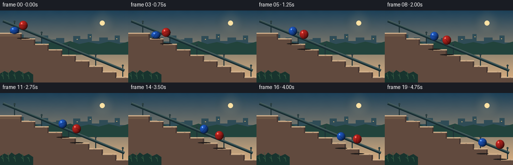
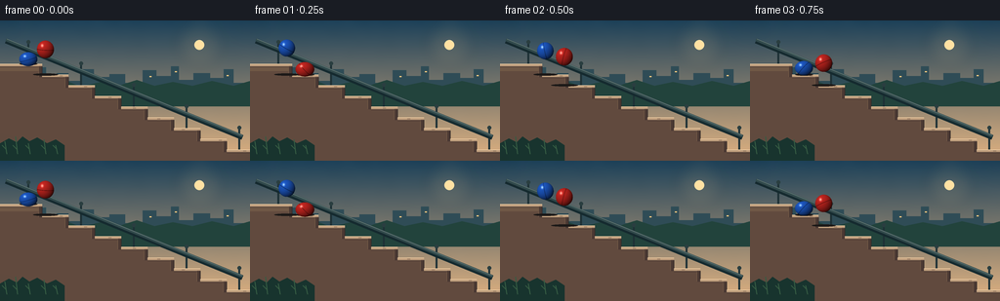

CODING AGENTS AS PIXEL WORLD MODELS
traex/GPT-5.6-Sol · instance_preservation_0022
点击播放 · 原生 RGB 像素
逐轮保存的候选
回放视频、检查图与代码变化。
每份候选均可单独播放。实际图片检查记录在下方工具轨迹中。
候选 01播放与检查图
点击播放 · 原生 RGB 像素


展开代码变化
--- 上一保存版本
+++ 本次保存版本
@@ -0,0 +1,209 @@
+from pathlib import Path
+import json, math
+import numpy as np
+from PIL import Image, ImageDraw, ImageFilter
+import artifact_io
+
+CASE_DIR = Path(__file__).resolve().parent
+SPEC = json.loads((CASE_DIR / "task_spec.json").read_text())
+W, H = SPEC["width"], SPEC["height"]
+N = SPEC["frames"]
+S = 4
+WW, HH = W*S, H*S
+
+def sc(v):
+ return int(round(v*S))
+
+def pts(seq):
+ return [(sc(x), sc(y)) for x, y in seq]
+
+def line(draw, seq, fill, width=1, joint="curve"):
+ draw.line(pts(seq), fill=fill, width=max(1, sc(width)), joint=joint)
+
+def ellipse(draw, box, fill, outline=None, width=1):
+ draw.ellipse(tuple(sc(v) for v in box), fill=fill, outline=outline, width=max(1, sc(width)))
+
+def polygon(draw, seq, fill):
+ draw.polygon(pts(seq), fill=fill)
+
+# Fixed, gently textured dawn sky. Keeping the texture fixed prevents flicker.
+rng = np.random.default_rng(2204)
+y = np.linspace(0, 1, HH)[:, None, None]
+top = np.array([29, 65, 91], dtype=float)[None, None, :]
+bot = np.array([224, 180, 132], dtype=float)[None, None, :]
+base = top*(1-y) + bot*y
+base = np.repeat(base, WW, axis=1)
+noise_small = rng.normal(0, 1, (max(2, HH//18), max(2, WW//18)))
+noise_im = Image.fromarray(np.uint8(np.clip(128 + noise_small*18, 0, 255))).resize((WW,HH), Image.Resampling.BICUBIC).filter(ImageFilter.GaussianBlur(sc(4)))
+noise = (np.asarray(noise_im, dtype=float)-128.0)[...,None] * 0.045
+sky = np.uint8(np.clip(base + noise, 0, 255))
+static = Image.fromarray(sky, "RGB")
+d = ImageDraw.Draw(static, "RGBA")
+
+# Sun glow and disc behind the city.
+glow = Image.new("RGBA", (WW, HH), (0,0,0,0))
+gd = ImageDraw.Draw(glow, "RGBA")
+for rr, aa in [(25,10),(17,16),(11,24)]:
+ ellipse(gd, (204-rr, 25-rr, 204+rr, 25+rr), (255,211,142,aa))
+glow = glow.filter(ImageFilter.GaussianBlur(sc(6)))
+static = Image.alpha_composite(static.convert("RGBA"), glow)
+d = ImageDraw.Draw(static, "RGBA")
+ellipse(d, (199,20,209,30), (255,225,166,215))
+
+# Distant city silhouette and atmospheric layers.
+polygon(d, [(0,65),(0,57),(13,57),(13,52),(23,52),(23,59),(34,59),(34,48),(47,48),(47,58),(58,58),(58,54),(70,54),(70,62),(83,62),(83,50),(96,50),(96,58),(112,58),(112,55),(128,55),(128,64),(146,64),(146,51),(160,51),(160,57),(175,57),(175,47),(183,47),(183,61),(198,61),(198,54),(215,54),(215,59),(229,59),(229,50),(239,50),(239,64),(256,64),(256,80),(0,80)], (47,76,88,90))
+# A few windows, intentionally subtle.
+for x, yy in [(18,61),(39,54),(90,56),(153,57),(179,52),(232,56)]:
+ d.rectangle((sc(x),sc(yy),sc(x+2),sc(yy+1)), fill=(245,203,130,85))
+# Low hedge/ground behind stairs.
+polygon(d, [(0,68),(10,64),(23,68),(35,62),(49,67),(66,61),(82,68),(103,63),(121,67),(140,61),(158,67),(177,63),(197,67),(217,62),(239,67),(256,62),(256,88),(0,88)], (34,67,61,165))
+
+# Railing, positioned behind both stairs and balls.
+rail = (30,49,55,225)
+# Vertical posts bolted to alternating steps.
+for k in range(0,9,2):
+ xpost = 29 + 27*k
+ ystep = 47 + 11*k
+ line(d, [(xpost,ystep-1),(xpost,ystep-25)], rail, 2.0)
+ ellipse(d, (xpost-2,ystep-27,xpost+2,ystep-23), (42,62,65,235))
+# Main handrail follows the stair pitch.
+line(d, [(6,21),(248,120)], (21,42,48,130), 5.2)
+line(d, [(6,19.5),(248,118.5)], (49,73,77,250), 3.0)
+line(d, [(7,19),(248,118)], (104,127,126,100), .7)
+
+# Stair profile geometry.
+x_edge, y0, sw, sh = 43, 47, 27, 11
+profile = [(0,y0),(x_edge,y0)]
+for k in range(1,9):
+ profile += [(x_edge+sw*(k-1), y0+sh*k), (x_edge+sw*k, y0+sh*k)]
+profile += [(256, y0+sh*8),(256,144),(0,144)]
+polygon(d, profile, (111,88,72,255))
+# Side fascia catches broad warm light.
+polygon(d, [(0,52),(39,52),(39,58),(66,58),(66,69),(93,69),(93,80),(120,80),(120,91),(147,91),(147,102),(174,102),(174,113),(201,113),(201,124),(228,124),(228,135),(256,135),(256,144),(0,144)], (96,74,63,165))
+
+# Individual treads and risers communicate the staircase unmistakably.
+for k in range(9):
+ xa = 0 if k == 0 else x_edge + sw*(k-1)
+ xb = x_edge + sw*k if k < 8 else 256
+ yy = y0 + sh*k
+ # tread top, with a bright front lip
+ polygon(d, [(xa,yy-2.4),(xb,yy-2.4),(xb,yy+0.5),(xa,yy+0.5)], (184,154,124,255))
+ line(d, [(xa,yy-2.2),(xb,yy-2.2)], (235,204,165,215), .75)
+ line(d, [(xa,yy+.5),(xb,yy+.5)], (70,53,49,180), .65)
+ if k < 8:
+ xr = x_edge + sw*k
+ polygon(d, [(xr-3,yy),(xr,yy),(xr,yy+sh),(xr-3,yy+sh)], (74,57,52,205))
+ line(d, [(xr,yy),(xr,yy+sh)], (53,44,43,190), .75)
+ # small fixed chips and grain add material detail
+ if k > 0:
+ gx = xa + 7 + (k*11)%13
+ line(d, [(gx,yy-1.2),(gx+3,yy-1.2)], (107,84,70,130), .45)
+
+# Foreground edge and a few small plants at the lower left.
+polygon(d, [(0,126),(9,121),(17,125),(23,119),(30,124),(38,120),(48,126),(57,122),(66,128),(66,144),(0,144)], (24,52,47,220))
+for x0p,hp in [(7,13),(18,18),(31,11),(47,15),(59,9)]:
+ line(d, [(x0p,137),(x0p-2,137-hp)], (54,92,68,210), 1)
+ line(d, [(x0p-1,132),(x0p-5,128)], (54,92,68,190), 1)
+
+# A narrow vignette is painted once and remains stable.
+vig = Image.new("L", (WW,HH), 0)
+vd = ImageDraw.Draw(vig)
+vd.rectangle((0,0,WW,HH), fill=20)
+vd.ellipse((-sc(35),-sc(25),WW+sc(35),HH+sc(32)), fill=0)
+vig = vig.filter(ImageFilter.GaussianBlur(sc(14)))
+shade = Image.new("RGBA", (WW,HH), (7,18,24,0)); shade.putalpha(vig)
+static = Image.alpha_composite(static, shade)
+
+def ball_state(q, jump, radius):
+ k = math.floor(q)
+ u = q-k
+ x = 29 + sw*q
+ contact_center_y = y0 + sh*q - radius
+ yb = contact_center_y - jump*math.sin(math.pi*u)
+ # Elastic deformation: brief squash at landings, gentle stretch in flight.
+ edge = min(u, 1-u)
+ squash = 0.15*math.exp(-(edge/0.085)**2)
+ stretch = 0.045*(math.sin(math.pi*u)**2)
+ rx = radius*(1 + squash*0.68 - stretch*0.15)
+ ry = radius*(1 - squash + stretch)
+ yb += radius-ry
+ return x, yb, rx, ry, u, k
+
+def draw_ball(im, state, base_rgb, phase_angle):
+ x,yb,rx,ry,u,k = state
+ # Render a shaded elastic sphere directly into its local high-res patch.
+ left, top = sc(x-rx-1), sc(yb-ry-1)
+ right, bottom = sc(x+rx+1), sc(yb+ry+1)
+ pw, ph = max(1,right-left), max(1,bottom-top)
+ xx = (np.arange(pw)+left+0.5)/S
+ yy = (np.arange(ph)+top+0.5)/S
+ nx = (xx[None,:]-x)/rx
+ ny = (yy[:,None]-yb)/ry
+ rr = nx*nx+ny*ny
+ inside = rr <= 1
+ nz = np.sqrt(np.maximum(0,1-rr))
+ # Upper-left key light plus warm reflected light from the stairs.
+ lighting = np.clip(.36 + .52*(-.45*nx-.56*ny+.70*nz) + .10*np.maximum(ny,0), .18, 1.05)
+ arr = np.zeros((ph,pw,4), dtype=np.uint8)
+ for c,val in enumerate(base_rgb):
+ arr[...,c] = np.uint8(np.clip(val*lighting,0,255))
+ # Thin rotating molded seam, useful for perceiving spin without changing identity.
+ a = phase_angle
+ seam = np.abs(nx*math.cos(a)+ny*math.sin(a)-0.10*nz) < .035
+ seam &= inside
+ arr[seam,:3] = np.uint8(arr[seam,:3].astype(float)*.62)
+ # Hard glossy glint and soft secondary glint.
+ spec = np.exp(-((nx+.38)**2/.018 + (ny+.43)**2/.025))
+ add = spec[...,None]*np.array([150,150,140])[None,None,:]
+ arr[...,:3] = np.uint8(np.clip(arr[...,:3].astype(float)+add,0,255))
+ alpha = np.where(inside,255,0).astype(np.uint8)
+ arr[...,3]=alpha
+ patch = Image.fromarray(arr,"RGBA")
+ im.alpha_composite(patch,(left,top))
+ return x,yb,rx,ry,u,k
+
+frames=[]
+for f in range(N):
+ im = static.copy()
+ dr = ImageDraw.Draw(im,"RGBA")
+ # Different progress rates prevent the balls from merging while retaining two identities.
+ qr = 0.65 + 6.80*f/(N-1)
+ qb = 0.00 + 6.15*f/(N-1)
+ red = ball_state(qr, 17.2, 8.8)
+ blue = ball_state(qb, 15.8, 8.5)
+
+ # Shadows sit on the next tread and contract as the ball approaches it.
+ for st,col in [(red,(54,28,25,100)),(blue,(25,35,49,95))]:
+ x,yb,rx,ry,u,k = st
+ tread_k = min(8, k+1 if u>.12 else max(0,k))
+ sy = y0 + sh*tread_k - 2.5
+ height = max(0, sy-(yb+ry))
+ alpha = int(90*max(.25,1-height/30))
+ shadow_w = rx*(1.0 + min(height,20)/35)
+ ellipse(dr,(x-shadow_w,sy-1.15,x+shadow_w,sy+1.1),(28,25,25,alpha))
+
+ # Tiny impact puffs only at actual contacts, not duplicate ball trails.
+ for st,tint in [(red,(240,204,161,130)),(blue,(222,195,161,105))]:
+ x,yb,rx,ry,u,k=st
+ dist=min(u,1-u)
+ if dist < .055:
+ sy=y0+sh*round((x-29)/sw)-2.5
+ for j in range(3):
+ dx=(-1+j)*3.0
+ ellipse(dr,(x+dx-1.2,sy-2-j*.8,x+dx+1.2,sy-j*.8),tint)
+
+ # Back-to-front by y center keeps overlaps physically coherent if paths approach.
+ objects=[("red",red,(220,43,38), qr*2.5), ("blue",blue,(33,100,225), qb*2.65+1.2)]
+ objects.sort(key=lambda item:item[1][1])
+ for _,st,color,ang in objects:
+ draw_ball(im,st,color,ang)
+
+ # Very subtle frame-consistent warm color grade.
+ rgb = im.convert("RGB").resize((W,H),Image.Resampling.LANCZOS)
+ arr=np.asarray(rgb,dtype=np.float32)
+ arr[...,0]*=1.015; arr[...,2]*=.985
+ frames.append(np.uint8(np.clip(arr,0,255)))
+
+frames=np.stack(frames,axis=0)
+artifact_io.save(frames, CASE_DIR)
+print(f"saved {frames.shape} RGB frames to {CASE_DIR}")
可观测工具轨迹
实际执行的命令与返回图片。
命令 1exit 0
/bin/bash -lc "cat prompt.txt && printf '\\n---RULES---\\n' && cat GENERATION_RULES.md && printf '\\n---SPEC---\\n' && cat task_spec.json"
命令 2exit 0
/bin/bash -lc "find . -maxdepth 2 -type f -printf '%p\\n' | sort"
命令 3exit 0
/bin/bash -lc 'cat artifact_io.py'
命令 4exit 2
/bin/bash -lc "cat > generate.py <<'PY'
from pathlib import Path
import json, math
import numpy as np
from PIL import Image, ImageDraw, ImageFilter
import artifact_io
CASE_DIR = Path(__file__).resolve().parent
SPEC = json.loads((CASE_DIR / \"task_spec.json\").read_text())
W, H = SPEC[\"width\"], SPEC[\"height\"]
N = SPEC[\"frames\"]
S = 4
WW, HH = W*S, H*S
def sc(v):
return int(round(v*S))
def pts(seq):
return [(sc(x), sc(y)) for x, y in seq]
def line(draw, seq, fill, width=1, joint=\"curve\"):
draw.line(pts(seq), fill=fill, width=max(1, sc(width)), joint=joint)
def ellipse(draw, box, fill, outline=None, width=1):
draw.ellipse(tuple(sc(v) for v in box), fill=fill, outline=outline, width=max(1, sc(width)))
def polygon(draw, seq, fill):
draw.polygon(pts(seq), fill=fill)
# Fixed, gently textured dawn sky. Keeping the texture fixed prevents flicker.
rng = np.random.default_rng(2204)
y = np.linspace(0, 1, HH)[:, None, None]
top = np.array([29, 65, 91], dtype=float)[None, None, :]
bot = np.array([224, 180, 132], dtype=float)[None, None, :]
base = top*(1-y) + bot*y
base = np.repeat(base, WW, axis=1)
noise_small = rng.normal(0, 1, (max(2, HH//18), max(2, WW//18)))
noise_im = Image.fromarray(np.uint8(np.clip(128 + noise_small*18, 0, 255))).resize((WW,HH), Image.Resampling.BICUBIC).filter(ImageFilter.GaussianBlur(sc(4)))
noise = (np.asarray(noise_im, dtype=float)-128.0)[...,None] * 0.045
sky = np.uint8(np.clip(base + noise, 0, 255))
static = Image.fromarray(sky, \"RGB\")
d = ImageDraw.Draw(static, \"RGBA\")
# Sun glow and disc behind the city.
glow = Image.new(\"RGBA\", (WW, HH), (0,0,0,0))
gd = ImageDraw.Draw(glow, \"RGBA\")n = None
for rr, aa in [(25,10),(17,16),(11,24)]:
ellipse(gd, (204-rr, 25-rr, 204+rr, 25+rr), (255,211,142,aa))
glow = glow.filter(ImageFilter.GaussianBlur(sc(6)))
static = Image.alpha_composite(static.convert(\"RGBA\"), glow)
d = ImageDraw.Draw(static, \"RGBA\")
ellipse(d, (199,20,209,30), (255,225,166,215))
# Distant city silhouette and atmospheric layers.
polygon(d, [(0,65),(0,57),(13,57),(13,52),(23,52),(23,59),(34,59),(34,48),(47,48),(47,58),(58,58),(58,54),(70,54),(70,62),(83,62),(83,50),(96,50),(96,58),(112,58),(112,55),(128,55),(128,64),(146,64),(146,51),(160,51),(160,57),(175,57),(175,47),(183,47),(183,61),(198,61),(198,54),(215,54),(215,59),(229,59),(229,50),(239,50),(239,64),(256,64),(256,80),(0,80)], (47,76,88,90))
# A few windows, intentionally subtle.
for x, yy in [(18,61),(39,54),(90,56),(153,57),(179,52),(232,56)]:
d.rectangle((sc(x),sc(yy),sc(x+2),sc(yy+1)), fill=(245,203,130,85))
# Low hedge/ground behind stairs.
polygon(d, [(0,68),(10,64),(23,68),(35,62),(49,67),(66,61),(82,68),(103,63),(121,67),(140,61),(158,67),(177,63),(197,67),(217,62),(239,67),(256,62),(256,88),(0,88)], (34,67,61,165))
# Railing, positioned behind both stairs and balls.
rail = (30,49,55,225)
# Vertical posts bolted to alternating steps.
for k in range(0,9,2):
xpost = 29 + 27*k
ystep = 47 + 11*k
line(d, [(xpost,ystep-1),(xpost,ystep-25)], rail, 2.0)
ellipse(d, (xpost-2,ystep-27,xpost+2,ystep-23), (42,62,65,235))
# Main handrail follows the stair pitch.
line(d, [(6,21),(248,120)], (21,42,48,130), 5.2)
line(d, [(6,19.5),(248,118.5)], (49,73,77,250), 3.0)
line(d, [(7,19),(248,118)], (104,127,126,100), .7)
# Stair profile geometry.
x_edge, y0, sw, sh = 43, 47, 27, 11
profile = [(0,y0),(x_edge,y0)]
for k in range(1,9):
profile += [(x_edge+sw*(k-1), y0+sh*k), (x_edge+sw*k, y0+sh*k)]
profile += [(256, y0+sh*8),(256,144),(0,144)]
polygon(d, profile, (111,88,72,255))
# Side fascia catches broad warm light.
polygon(d, [(0,52),(39,52),(39,58),(66,58),(66,69),(93,69),(93,80),(120,80),(120,91),(147,91),(147,102),(174,102),(174,113),(201,113),(201,124),(228,124),(228,135),(256,135),(256,144),(0,144)], (96,74,63,165))
# Individual treads and risers communicate the staircase unmistakably.
for k in range(9):
xa = 0 if k == 0 else x_edge + sw*(k-1)
xb = x_edge + sw*k if k < 8 else 256
yy = y0 + sh*k
# tread top, with a bright front lip
polygon(d, [(xa,yy-2.4),(xb,yy-2.4),(xb,yy+0.5),(xa,yy+0.5)], (184,154,124,255))
line(d, [(xa,yy-2.2),(xb,yy-2.2)], (235,204,165,215), .75)
line(d, [(xa,yy+.5),(xb,yy+.5)], (70,53,49,180), .65)
if k < 8:
xr = x_edge + sw*k
polygon(d, [(xr-3,yy),(xr,yy),(xr,yy+sh),(xr-3,yy+sh)], (74,57,52,205))
line(d, [(xr,yy),(xr,yy+sh)], (53,44,43,190), .75)
# small fixed chips and grain add material detail
if k > 0:
gx = xa + 7 + (k*11)%13
line(d, [(gx,yy-1.2),(gx+3,yy-1.2)], (107,84,70,130), .45)
# Foreground edge and a few small plants at the lower left.
polygon(d, [(0,126),(9,121),(17,125),(23,119),(30,124),(38,120),(48,126),(57,122),(66,128),(66,144),(0,144)], (24,52,47,220))
for x0p,hp in [(7,13),(18,18),(31,11),(47,15),(59,9)]:
line(d, [(x0p,137),(x0p-2,137-hp)], (54,92,68,210), 1)
line(d, [(x0p-1,132),(x0p-5,128)], (54,92,68,190), 1)
# A narrow vignette is painted once and remains stable.
vig = Image.new(\"L\", (WW,HH), 0)
vd = ImageDraw.Draw(vig)
vd.rectangle((0,0,WW,HH), fill=20)
vd.ellipse((-sc(35),-sc(25),WW+sc(35),HH+sc(32)), fill=0)
vig = vig.filter(ImageFilter.GaussianBlur(sc(14)))
shade = Image.new(\"RGBA\", (WW,HH), (7,18,24,0)); shade.putalpha(vig)
static = Image.alpha_composite(static, shade)
def ball_state(q, jump, radius):
k = math.floor(q)
u = q-k
x = 29 + sw*q
contact_center_y = y0 + sh*q - radius
yb = contact_center_y - jump*math.sin(math.pi*u)
# Elastic deformation: brief squash at landings, gentle stretch in flight.
edge = min(u, 1-u)
squash = 0.15*math.exp(-(edge/0.085)**2)
stretch = 0.045*(math.sin(math.pi*u)**2)
rx = radius*(1 + squash*0.68 - stretch*0.15)
ry = radius*(1 - squash + stretch)
yb += radius-ry
return x, yb, rx, ry, u, k
def draw_ball(im, state, base_rgb, phase_angle):
x,yb,rx,ry,u,k = state
# Render a shaded elastic sphere directly into its local high-res patch.
left, top = sc(x-rx-1), sc(yb-ry-1)
right, bottom = sc(x+rx+1), sc(yb+ry+1)
pw, ph = max(1,right-left), max(1,bottom-top)
xx = (np.arange(pw)+left+0.5)/S
yy = (np.arange(ph)+top+0.5)/S
nx = (xx[None,:]-x)/rx
ny = (yy[:,None]-yb)/ry
rr = nx*nx+ny*ny
inside = rr <= 1
nz = np.sqrt(np.maximum(0,1-rr))
# Upper-left key light plus warm reflected light from the stairs.
lighting = np.clip(.36 + .52*(-.45*nx-.56*ny+.70*nz) + .10*np.maximum(ny,0), .18, 1.05)
arr = np.zeros((ph,pw,4), dtype=np.uint8)
for c,val in enumerate(base_rgb):
arr[...,c] = np.uint8(np.clip(val*lighting,0,255))
# Thin rotating molded seam, useful for perceiving spin without changing identity.
a = phase_angle
seam = np.abs(nx*math.cos(a)+ny*math.sin(a)-0.10*nz) < .035
seam &= inside
arr[seam,:3] = np.uint8(arr[seam,:3].astype(float)*.62)
# Hard glossy glint and soft secondary glint.
spec = np.exp(-((nx+.38)**2/.018 + (ny+.43)**2/.025))
add = spec[...,None]*np.array([150,150,140])[None,None,:]
arr[...,:3] = np.uint8(np.clip(arr[...,:3].astype(float)+add,0,255))
alpha = np.where(inside,255,0).astype(np.uint8)
arr[...,3]=alpha
patch = Image.fromarray(arr,\"RGBA\")
im.alpha_composite(patch,(left,top))
return x,yb,rx,ry,u,k
frames=[]
for f in range(N):
im = static.copy()
dr = ImageDraw.Draw(im,\"RGBA\")
# Different progress rates prevent the balls from merging while retaining two identities.
qr = 0.65 + 6.80*f/(N-1)
qb = 0.00 + 6.15*f/(N-1)
red = ball_state(qr, 17.2, 8.8)
blue = ball_state(qb, 15.8, 8.5)
# Shadows sit on the next tread and contract as the ball approaches it.
for st,col in [(red,(54,28,25,100)),(blue,(25,35,49,95))]:
x,yb,rx,ry,u,k = st
tread_k = min(8, k+1 if u>.12 else max(0,k))
sy = y0 + sh*tread_k - 2.5
height = max(0, sy-(yb+ry))
alpha = int(90*max(.25,1-height/30))
shadow_w = rx*(1.0 + min(height,20)/35)
ellipse(dr,(x-shadow_w,sy-1.15,x+shadow_w,sy+1.1),(28,25,25,alpha))
# Tiny impact puffs only at actual contacts, not duplicate ball trails.
for st,tint in [(red,(240,204,161,130)),(blue,(222,195,161,105))]:
x,yb,rx,ry,u,k=st
dist=min(u,1-u)
if dist < .055:
sy=y0+sh*round((x-29)/sw)-2.5
for j in range(3):
dx=(-1+j)*3.0
ellipse(dr,(x+dx-1.2,sy-2-j*.8,x+dx+1.2,sy-j*.8),tint)
# Back-to-front by y center keeps overlaps physically coherent if paths approach.
objects=[(\"red\",red,(220,43,38), qr*2.5), (\"blue\",blue,(33,100,225), qb*2.65+1.2)]
objects.sort(key=lambda item:item[1][1])
for _,st,color,ang in objects:
draw_ball(im,st,color,ang)
# Very subtle frame-consistent warm color grade.
rgb = im.convert(\"RGB\").resize((W,H),Image.Resampling.LANCZOS)
arr=np.asarray(rgb,dtype=np.float32)
arr[...,0]*=1.015; arr[...,2]*=.985
frames.append(np.uint8(np.clip(arr,0,255)))
frames=np.stack(frames,axis=0)
artifact_io.save(frames, CASE_DIR)
print(f\"saved {frames.shape} RGB frames to {CASE_DIR}\")
PY
python generate.py
ls -lh pixels.npz inspection.png index.html frames/00.png frames/19.png"命令 5exit 0
/bin/bash -lc "python - <<'PY'
p='generate.py'
s=open(p).read().replace('gd = ImageDraw.Draw(glow, \"RGBA\")n = None','gd = ImageDraw.Draw(glow, \"RGBA\")')
open(p,'w').write(s)
PY
python generate.py
ls -lh pixels.npz inspection.png index.html frames/00.png frames/19.png"命令 6exit 0
/bin/bash -lc "python -m py_compile generate.py && python - <<'PY'
from PIL import Image
import numpy as np, pathlib
fs=np.stack([np.array(Image.open(f'frames/{i:02d}.png')) for i in range(20)])
print('shape/dtype/range',fs.shape,fs.dtype,fs.min(),fs.max())
for i in range(1,20):
d=np.abs(fs[i].astype(int)-fs[i-1].astype(int))
print(f'{i-1:02d}->{i:02d}: changed={(d.max(2)>8).sum():4d}, mean={d.mean():.3f}, max={d.max()}')
print('unique checksum count',len({hash(x.tobytes()) for x in fs}))
PY"保存候选 1 份；完成命令 6 次；可验证图片返回 0 张。原始 API 响应与完整日志保留在本地。